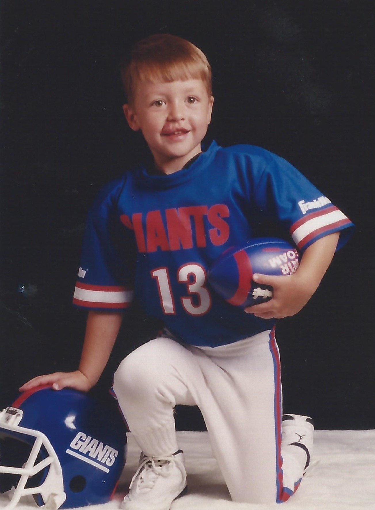

I am a student in the Harvard/MIT MD-PhD program. I recently completed my PhD in the Department of Electrical Engineering and Computer Science at MIT, working with Prof. Larry Wald at the MGH Martinos Center. My doctoral research focused on computational methods for medical imaging, particularly GPU-accelerated MRI excitation pulse design and a novel multiphoton-based excitation technique for achieving homogeneous excitations in high-field MRI. More broadly, I am interested in developing numerical methods and computational techniques for clinical medicine.
Email: firstname [underscore] lastname [at] hms [dot] harvard [dot] edu
Previously, I contributed to the development of functional magnetic particle imaging scanners and characterized detection sensitivity to cerebral blood volume changes in vivo. I have also studied 2D–3D deep learning approaches for image registration and investigated the in vivo kinematics of knee replacement designs using dual-plane fluoroscopy in the MGH Bioengineering Laboratory.
Outside of medicine and engineering, I'm an avid sports fan and a lifelong supporter of the New York Football Giants. In my free time, I enjoy reading nonfiction, playing pick-up basketball, learning guitar, and seeing live music.
Thank you for visiting my webpage! Go Giants!
